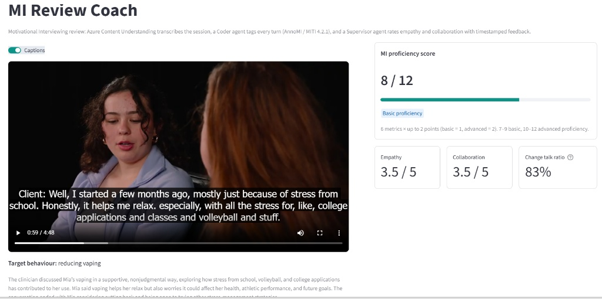
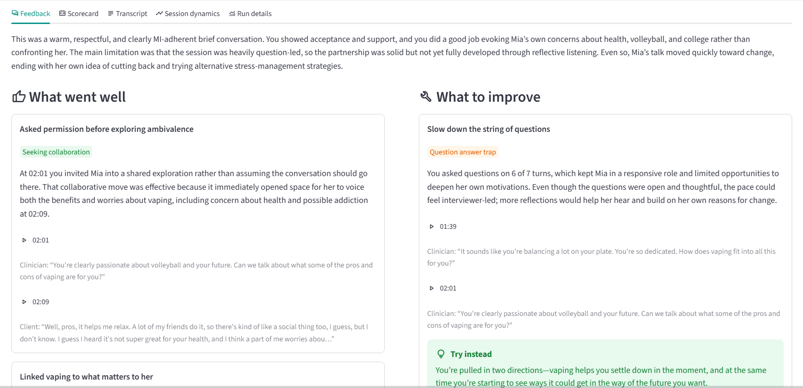
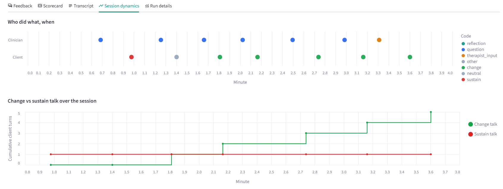

Public role-play demonstrations (AnnoMI #27; “MI in Action” role-play). Scored by MIRA.
“Workshops alone don't make clinicians proficient; feedback and coaching do.”
“Training gains fade within months without follow-up coaching.”
“What did I say that worked, and what should I say instead?”
“I can review only a few sessions, and scoring is slow and subjective.”
“Is our MI training changing how we talk to patients?”
Miller & Rollnick, Motivational Interviewing (2013) · MINT: Motivational Interviewing Network of Trainers · Quotes: Mia's session
Name real strengths and efforts.
Collect what the client said, then transition.
facts, background, small talk
N“Do you put Oscar higher than your baby?”
Sal's clinician argued for change, so the client defended the dog.
Behaviour counts: questions, reflections, MI-adherent or not; client change / sustain talk.
Global ratings: Empathy and Partnership, 1–5.
MITI 4.2.1 (Moyers, Manuel & Ernst). Ratings use half-points so 3.5 is reachable. Dots show Mia's session.
Client-impact indicator, not part of the 12 points. Neutral turns are excluded.
Diarized transcript, ms timestamps, clinician speaker, target behaviour, summary
MITI / AnnoMI codes for every turn
Ratios, thresholds, points. No LLM.
Empathy, Collaboration, strengths, traps, better responses
Turn ids → quotes + timestamps; ▶ seeks the video
LLMs judge language; Python does the math
Model cites turn ids; code inserts quote + timestamp
Strict typed JSON, validated, retried once
22 few-shot examples covering all 15 labels
1 high- + 1 low-quality excerpt
High vs low medians on every metric
27 held-out transcripts
Wu et al., “Anno-MI: A Dataset of Expert-Annotated Counselling Dialogues”, ICASSP 2022.
Rules only
Rules + ~20 labelled examples
Thousands of labels + a training pipeline
{ "turn": 6,
"rationale": "Affirms values, asks permission,
then invites pros and cons discussion.",
"question": "open",
"mi_behaviour": "seek_collaboration",
"adherence": "adherent" }Mia offered strong change talk: she could cut back and needs another way to cope with stress. The clinician moved quickly into offering options.



backupPlan B: the saved report opens instantly, with no Azure call.
Agreement beyond chance. A coder answering “neutral” every time scores 64% accuracy but κ = 0.
10 experts labelled the same 7 sessions; we compare each with the other 9. MIRA ≈ ceiling means as consistent as an expert.
Pick one good and one poor session at random: how often does MIRA score the good one higher?
Share of words transcribed wrong. 10% ≈ 1 word in 10.
1,276 turns from 27 held-out sessions: κ 0.85 on main behaviour
Model chosen by data: gpt-5.4 κ 0.85 vs mini 0.78
One prompt rule (“Yes.” = neutral) lifted client-talk κ by +0.14
36 of 110 expert-complex reflections coded simple (experts agree only κ 0.22 on this call); demo score varied 6–8 across runs.
Ranking is right, but 8 of 17 good sessions land in “Developing”.
70% of expert utterances matched (“Mm-hmm” gets merged).
%MI-adherent has no expert labels; text only; prototype (no auth or storage).
100 clinicians × 4 sessions / month (30 min each)
Azure list prices, Global Standard, pay-as-you-go: CU audio $0.36/h; gpt-5.4 $2.50 in / $15 out per 1M tokens; gpt-5.4-mini $0.75 / $4.50. Token counts from saved reports.
Content Understanding + Azure OpenAI in Foundry; Entra ID auth
Models, reasoning effort and analyzer set in .env
31 unit tests + 3 eval suites; re-measured on every prompt change
13 Python modules, typed schemas, README recipes
End-to-end pipeline, app, evals, cost telemetry
Container Apps / App Service · Entra sign-in · Blob storage with retention · Key Vault · App Insights
Validate on 30–50 consented, human-coded sessions
Team dashboards · LMS / EHR integration · batch reviews (−50%) · more languages
Text can't tell them apart.
Clinician talk-time share · pause after the client speaks · interruptions · speaking rate
Warmth, pace, hesitation, each with a timestamp
Gaze, nodding, posture, movement synchrony
checkMeasure observable behaviour
checkGet consent from both people
checkShow the clinician first
closeInfer emotion from faces or voices
closeScore clients
closeEnable surveillance
Evidence: vocal synchrony and empathy (Imel et al., 2014); empathy from speech (Xiao et al., 2015); body-movement synchrony and outcome (Ramseyer & Tschacher, 2011). Microsoft retired facial emotion inference in Azure Face (2022).